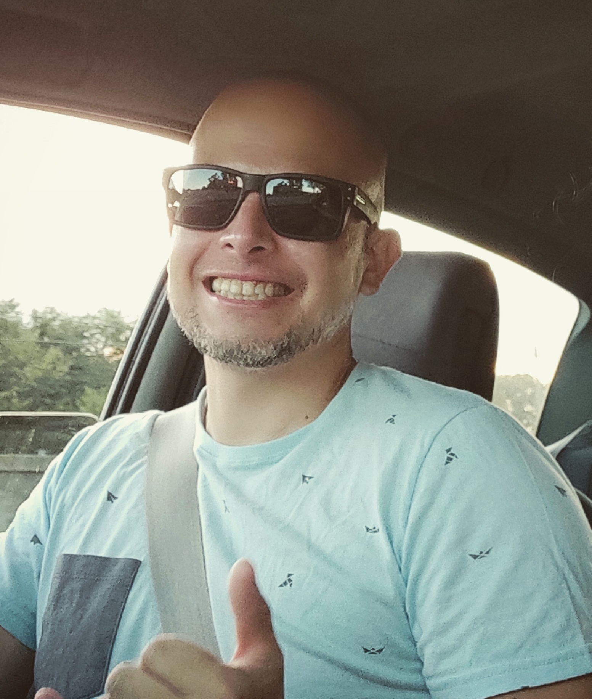

SEBASTIÁN POWELL
Curriculum Vitae

INFORMACION PERSONAL
- EDAD: 41 Años
- FECHA DE NACIMIENTO: 06 / 05 / 1980
- DNI: 27840756
- CUIT: 20-27840756-0
- DIRECCIÓN: Los Molinos 81
- LOCALIDAD: (5186) Alta Gracia - Córdoba
- CELULAR: (03547) 15631210
- E-MAIL: seba.powell@gmail.com
EXPERIENCIA LABORAL
1999-2000 : Studio - Estudio Integral de Arquitectura y diseño
Cargo: Dibujante
Función: Dibujante de planos en Autocad.
2001-2003 Tajamar TV Cable
Cargo: Cobrador
Función: Gestionar el cobro de morosos.
2004-2008: Multivoice (Call Center)
Cargo: Agente de atención al cliente, Facilitador (asistencia),
Líder, Representante de Soporte Operativo (SOPER) todo para la
cuenta de CTI (en este momento CLARO)
Función: Como representante desarrolle la tarea de
atención del *611 por un periodo de 11 meses, luego como facilitador
ayudando a los agentes por 2 meses. Después me encomendaron la
tarea de Líder (Supervisor) por 12 meses, teniendo a cargo un grupo de
24 personas. Por último realicé tareas de facturación en Soporte Operativo.
2008-2012: Teleperformance (Call Center)
Cargo: Representante de atención al cliente, Supervisor,
Back Office. Cuenta de TELEFONICA Pymes y TELECOM.
Función: Como representante desarrolle tareas de
atención al cliente para TELEFONICA Pymes. Luego a los 6 meses me
asignaron la tarea de Supervisor por 11 meses, teniendo a cargo a un
grupo de 16 personas. También realice tareas de Back Offce (control de
ventas y carga de las mismas). Actualmente continuo en la empresa en la
cuenta de 112 de TELECOM.
2012- 2020: DonCyberio (Propietario)
Cargo: Atención al cliente, mantenimiento de PC,
impresiones, diseños, tramites por internet.
Función: Comercio propio donde desempeño las
tareas de atención al cliente, manejo de caja, impresiones en general,
tramites que se realizan por internet, mantenimiento de PC (instalación
de software, sistema operativo, juegos) Tipeos en Word y tablas de calculo
en Excel con aplicación de funciones.
2018 - 2021: Carpintería Emilio Powell
Cargo: Carpintero.
Función: Empresa familiar donde desarrollamos muebles
a medida, reparaciones en general y diseños propios.
FORMACIÓN ACADÉMICA
Secundario: Instituto Industrial “El Obraje” (1992 - 1998)
TÍTULO: Maestro Mayor de Obras.
Universitario: IES Siglo21 (2006 - 2010)
TÍTULO: Diseñador Gráfico y Publicitario.
 Para ver mi Portfolio en Instagram
Para ver mi Portfolio en Instagram